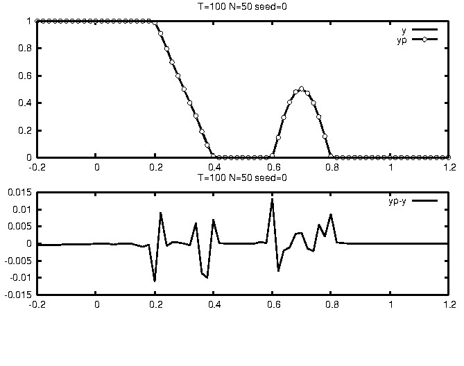
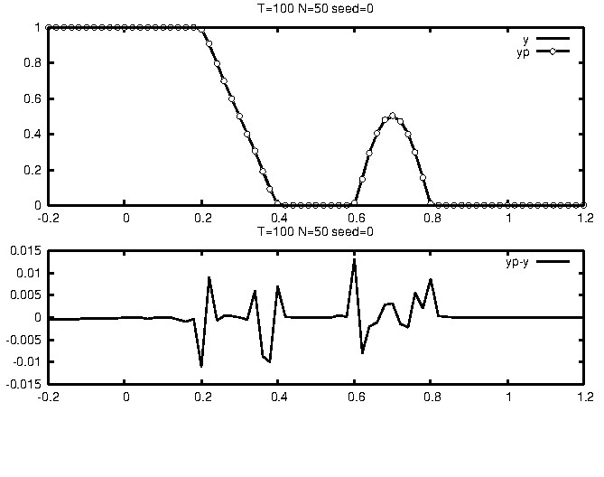
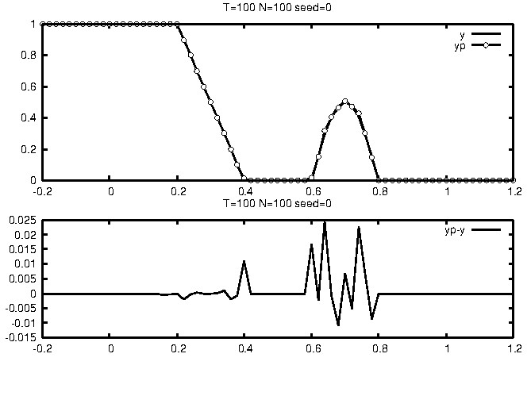
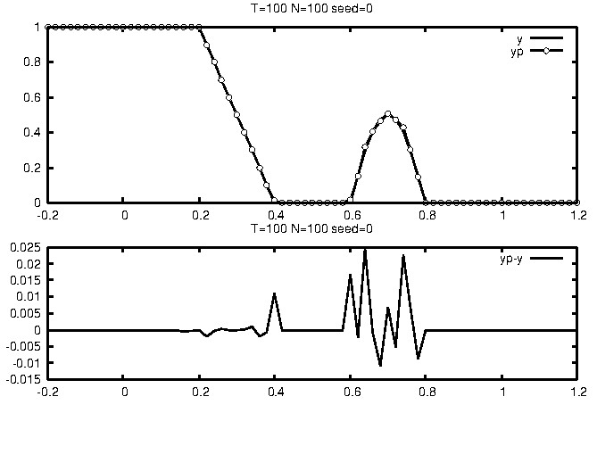

export d0=$PWD;echo $d0 #set the root directory involving data, can2py, can2comp, etc.
- Regression data (Fig.1) : made by the following steps
cd ${d0}/can2py
export fn=Geo1d ntrain=100 restest=50 extest=10 k=1;
python makesamples.py -msd $fn,$ntrain,$restest,$extest
dst=${d0}/data/${fn}_${ntrain}_${restest}_${extest}
mkdir -p $dst
cp tmp/train.csv tmp/test.csv $dst
- Time-series data (Fig.2): see [3] for data creation via using GMP:
${d0}/data/lorenz1e-8T0.025n10000p256m1_gmp.txt
 Fig.1
Fig.1
 Fig.2
Fig.2
- Regression
- single CAN2
cd $d0/can2comp;make#Results (see Fig.3) (smallest MSEtst=1.161e-05 (MSE for the test data) is achieved with N=30)
export fn=Geo1d ntrain=100 restest=50 extest=10 k=1;
export dst=${d0}/data/${fn}_${ntrain}_${restest}_${extest}
export fntrain=$dst/train.csv fntest=$dst/test.csv fnpred=predict+.dat
make data-clean;
export N=30 seed=0 k=1 T=100;
ensrs $fntrain -1:$fntest $N k:$k T:$T BIAS:1 Lstd:0:2 ib:0:0:0:0 vm2:-1 seed:$seed Tpinv:-1 nop:1 DISP:0
#(or) ensrs $fntrain 2:1:1:1 $N bg:$fntest k:$k T:$T BIAS:1 Lstd:0:2 ib:0:0:0:0 vm2:-1 seed:$seed Tpinv:-1 nop:1 export fntest=$fntest fnpred=./result-ensrs/tmp/train+test+s${s}0j0k${k}N${N}pred.dat;../sh/show${k}dpred.sh
#100(0.030s) 7.274e-05 5.076e-04 #ep(time),MSEtr,MSEtst k1 n100:71 N20 s0
#100(0.033s) 6.660e-06 1.161e-05 #ep(time),MSEtr,MSEtst k1 n100:71 N30 s0 ***
#100(0.031s) 1.563e-05 3.368e-04 #ep(time),MSEtr,MSEtst k1 n100:71 N40 s0
- Bagging CAN2
cd $d0/can2comp;make#Results (see Fig.4) (stably small MSE w.r.t. change of N)
export N=50 a=2.2 b=100 seed=0 k=1 T=100;
make data-clean;
ensrs $fntrain 2:$b:$a:1 $N bg:$fntest k:$k T:$T BIAS:1 Lstd:0:2 ib:0:0:0:0 vm2:-1 seed:$seed Tpinv:-1 nop:1
export fntest=$fntest fnpred=predict+.dat;../sh/show${k}dpred.sh
#[100,-1](1.5s) 1.706e-05 #[T,Tpinv](time) n220,71 k1 N40 b100 a2.2 s0 nop1 m_cpu6
#[100,-1](1.6s) 1.186e-05 #[T,Tpinv](time) n220,71 k1 N50 b100 a2.2 s0 nop1 m_cpu6***
#[100,-1](1.8s) 1.616e-05 #[T,Tpinv](time) n220,71 k1 N60 b100 a2.2 s0 nop1 m_cpu6
 Fig.3
 Fig.4
Fig.3
 Fig.4
- single CAN2
- Time-series IOS prediction (IOS:iterated one-step ahead prediction)
- single CAN2
cd $d0/can2comp;make#Results (see Fig.5)(H:predictable horison with the error threshold Ey=15)
export fn=$d0/data/lorenz1e-8T0.025n10000p256m1_gmp.txt
export T=100 Tpinv=-1 k=8 N=50 seed=1 tp0=2000 tpD=1 Ey=15 a=1 b=1 nop=1 n_compare=6 v_thresh=0.2 vmin=3 vmin2=0 v_ratio=0.5 width=0.2 l_mode=1 gamma=1.4e-4 nentropy_thresh=0.7 n_display=5 rot_x=50 rot_y=350 y=-18.5:18.5:0:1
make data-clean;
ensrs $fn 2:${b}:${a}:${seed} $N-$N:1 t:0-2000:$tp0-$(($tp0+500)):$tpD:$Ey bg:/dev/null ib:0:0:0:0 k:$k g:$gamma w:$width T:$T vt:$v_thresh vr:$v_ratio lossall:1 DISP:2 y:$y x:$y nop:1 Tpinv:-1
#To see the result saved in tmp/pred2000-2500.dat, do
cat > tmp/y.plt <<EOF
set grid;set term png;set output "tmp/y.png";
plot "tmp/pred2000-2500.dat" using 2:1 w l t "yp", "" using 2:3 w l t "y", "" using 2:(\$1-\$3) w l t "err=yp-y"
EOF
gnuplot tmp/y.plt;eog tmp/y.png
#[100,-1](0.2s) #[T,Tinv] k8 N40 b1(nens1) a1 seed1 nop1 m_cpu6 0-2000:2000-2500:15H126
#[100,-1](0.3s) #[T,Tinv] k8 N50 b1(nens1) a1 seed1 nop1 m_cpu6 0-2000:2000-2500:15H153***
#[100,-1](0.3s) #[T,Tinv] k8 N60 b1(nens1) a1 seed1 nop1 m_cpu6 0-2000:2000-2500:15H24
- Bagging CAN2
cd $d0/can2comp; make#Results (see Fig.6; longest predictable horizon H=224 is achieved with N=60)
export fn=$d0/data/lorenz1e-8T0.025n10000p256m1_gmp.txt
export T=100 Tpinv=-1 k=8 N=50 seed=1 tp0=2000 tpD=1 Ey=15 a=0.7 b=20 nop=1 n_compare=6 v_thresh=0.2 vmin=3 vmin2=0 v_ratio=0.5 width=0.2 l_mode=1 gamma=1.4e-4 nentropy_thresh=0.7 n_display=5 rot_x=50 rot_y=350 y=-18.5:18.5:0:1
make data-clean;
ensrs $fn 2:${b}:${a}:${seed} $N-$N:1 t:0-2000:$tp0-$(($tp0+500)):$tpD:$Ey bg:/dev/null ib:0:0:0:0 k:$k g:$gamma w:$width T:$T vt:$v_thresh vr:$v_ratio lossall:1 DISP:2 y:$y x:$y nop:1 Tpinv:-1
#[100,-1](0.9s) #[T,Tinv] k8 N40 b20(nens1) a0.7 seed1 nop1 m_cpu6 0-2000:2000-2500:15H157
#[100,-1](1.0s) #[T,Tinv] k8 N50 b20(nens1) a0.7 seed1 nop1 m_cpu6 0-2000:2000-2500:15H224 ***
#[100,-1](1.3s) #[T,Tinv] k8 N60 b20(nens1) a0.7 seed1 nop1 m_cpu6 0-2000:2000-2500:15H199
 Fig.6
Fig.6
- single CAN2
- Regression
- single CAN2
cd ${d0}/can2py#Results (see Fig.7,Fig.8) (smallest MSE=2.627e-05 (for the test data) is achieved with N=100)
export fn=Geo1d ntrain=100 restest=50 extest=10 k=1;
export dst=${d0}/data/${fn}_${ntrain}_${restest}_${extest} export fntrain=$dst/train.csv fntest=$dst/test.csv fnpred=$dst/pred.csv
export T=100 N=100 k=1;
make data-clean
python can2.py -fn $fntrain,$fntest,$fnpred -k $k -in $N,6,0.2,3,0,0.5,0.2 -ex 1,0.05,2.2,$T,5,50,350 --gpu -1 -DISP 1 -nop 1
../sh/show${k}dpred.sh
#100(1.050s) 7.310e-06 4.198e-05 #ep(time),MSEtr,MSE n100,71 k1 N90 T100,1000 seed0 nop1
#100(1.228s) 5.843e-06 2.627e-05 #ep(time),MSEtr,MSE n100,71 k1 N100 T100,1000 seed0 nop1
#100(1.249s) 5.843e-06 2.627e-05 #ep(time),MSEtr,MSE n100,71 k1 N110 T100,1000 seed0 nop1
- Bagging CAN2
cd ${d0}/can2py#Results (see Fig.9)
export T=100 N=50 k=1 Tpinv=-1 seed=1 m_cpu=0 b=100 a=2.2 nop=1
make data-clean
python ensrs.py -fn $fntrain,$fntest,$fnpred -k $k,0 -in $N,6,0.2,3,0,0.5,0.2 -ex 1,0.05,0.7,$T,5,50,350 -DISP 0 -Tpinv $Tpinv -s $seed -nop $nop -bag $b,$a,$seed,$m_cpu
../sh/show${k}dpred.sh
#[100,-1](53.1s) 3.052e-05 #[T,Tpinv] MSE n100,71 k1 N40 b100 a2.2 s1 m6 seed1 nop1
#[100,-1](55.5s) 2.105e-05 #[T,Tpinv] MSE n100,71 k1 N50 b100 a2.2 s1 m6 seed1 nop1***
#[100,-1](74.9s) 2.275e-05 #[T,Tpinv] MSE n100,71 k1 N60 b100 a2.2 s1 m6 seed1 nop1
 Fig.7
 Fig.8
Fig.7
 Fig.8
 Fig.9
Fig.9
- single CAN2
- Time-series IOS prediction
- Single CAN2 (try the following command with different seed=0,1,2,...)
export T=100 Tpinv=-1 k=10 N=50 seed=2 tp0=2000 tpD=1 Ey=15 nop=1 n_compare=6 v_thresh=0.2 vmin=3 vmin2=0 v_ratio=0.5 width=0.2 l_mode=1 gamma0=0.05 nentropy_thresh=0.7 n_display=5 rot_x=50 rot_y=350 y=-18.5,18.5,0,1#Results (see Fig.10,Fig.11)
export fn=$d0/data/lorenz1e-8T0.025n10000p256m1_gmp.txt
export fns=$d0/data/lorenz1e-8T0.025n10000p256m1_gmp+null+N50k10s${seed}.net
make data-clean
python can2.py -fn $fn -k $k -t 0-2000:$tp0-$(($tp0+500)):$tpD:$Ey -in $N,$n_compare,$v_thresh,$vmin,$vmin2,$v_ratio,$width -ex $l_mode,$gamma0,$nentropy_thresh,$T,$n_display,$rot_x,$rot_y --gpu -1 -DISP 1 -Tpinv $Tpinv -s $seed -nop $nop -y " $y" -fns $fns
#100(16.821s) 4.635e-05 1.238e-04 #ep(time),MSEtr,MSE n1990,500 k10 N50 T100,-1 seed0 nop1 t0-2000:2000-2500:1:15H22 predTime0.018s
#100(16.885s) 4.113e-05 1.174e-04 #ep(time),MSEtr,MSE n1990,500 k10 N50 T100,-1 seed1 nop1 t0-2000:2000-2500:1:15H194 predTime0.018s
#100(17.034s) 4.211e-05 1.293e-04 #ep(time),MSEtr,MSE n1990,500 k10 N50 T100,-1 seed2 nop1 t0-2000:2000-2500:1:15H101 predTime0.017s
# ...
- Bagging CAN2
export T=100 Tpinv=-1 k=10 N=50 seed=10 b=20 a=1.0 tp0=2000 Ey=15 nop=1 n_compare=6 v_thresh=0.2 vmin=3 vmin2=0 v_ratio=0.5 width=0.2 l_mode=1 gamma0=0.05 nentropy_thresh=0.7 n_display=5 rot_x=50 rot_y=350 y=-18.5,18.5,0,1 m_cpu=0 fn=$d0/data/lorenz1e-8T0.025n10000p256m1_gmp.txt#Results (see Fig.12)
make data-clean
python ensrs.py -fn $fn,,tmp/msp${tp0}.dat -k $k -t 0-2000:$tp0-$(($tp0+500)):1:$Ey -in $N,$n_compare,$v_thresh,$vmin,$vmin2,$v_ratio,$width -ex $l_mode,$gamma0,$nentropy_thresh,$T,$n_display,$rot_x,$rot_y --gpu -1 -DISP 0 -Tpinv $Tpinv -nop $nop -y " $y" -bag $b,$a,$seed,$m_cpu
#[100,-1](226.9s) #[T,Tpinv] k10 N50 b20a1.0s10m6 nop1 t0-2000:2000-2500:1:15H159 seed0
#[100,-1](227.1s) #[T,Tpinv] k10 N50 b20a1.0s0m6 nop1 t0-2000:2000-2500:1:15H158 seed1
- Single CAN2 (try the following command with different seed=0,1,2,...)
- Results of C and Python are different owing mainly to slightly different algorithms and parameters optimized for each language.
- Execution time of C is smaller than Python.
- Computational cost of the CAN2 is lower than many other machine learning methods mainly because it uses the learning scheme consisting of iterated steps of (a) local gradient descent optimization of two weight vectors near the input vector, (b) linear least squre optimization of a selected associative matrix, (c) reinitialization based on asymptotic optimality of error distortions avoiding local minimum (see [1]).
- The CAN2 has advantages on (A) prediction accuracy in learning the functions with piecewise different smoothness (see [1]), (B) ability of extrapolation as well as interpolation (see [1]), (C) comutational cost, (D) extraction of piecewise linear predictive coefficients in the applications such as speech and speaker recognition (audio processing) and control (see [4],[5]).
- [1]
S.Kurogi:Asymptotic optimality of competitive associative nets for
their learning in function approximation.
Proc. ICONIP2002, pp.507-511 (2002)
(Detailed Journal: S.Kurogi: Asymptotic optimality of competitive associative nets and its Application to incremental learning of nonlinear functions, Systems and Communications in Japan, Vol.J86-D-II, No.2, pp.184-194 (2003))
- [2] S.Kurogi: Improving generalization performance via out-of-bag estimate using variable size of bags, J. Japanese Neural Network Society, Vol.J.16, No.2, pp.81-92 (2009)
- [3] D.Miyazaki, K.Matsuo, and S.Kurogi: Entropy of LOO Predictable Horizons to Select a Learning Machine and a Representative Prediction of Chaotic Time Series, ICONIP 2020, CCIS 1333, pp. 778-787 (2020)
- [4] T.Tagomori, R.Tsuruda, K.Matsuo, S.Kurogi: Speaker verification from mixture of speech and non-speech audio signals via using pole distribution of piecewise linear predictive coding coefficients, J Ambient Intell Human Comput (2020) https://doi.org/10.1007/s12652-020-01716-6
- [5] H.Nakayama, K.Ogi, K.Matsuo, and S.Kuro: Composition and Analysis of Pareto Optimal Compromise Solutions for Multiobjective Robust Controller Using GPC and CAN2s, ICONIP 2020, CCIS 1333, pp. 713-722, 2020. https://doi.org/10.1007/978-3-030-63823-8_81
Last modified: Thu Oct 21 18:09:26 JST 2021